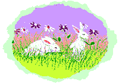

Sylvan
I love my bunny Sylvan. She's so adorable and cuddly. I've had her for about two years now, and she's been the best pet I've ever had. She's really low maintenance, and doesn't require much attention. I just make sure to give her plenty of food and water, and she's good to go.
Sylvan is mostly an indoor bunny, but she loves to go outside and hop around in the grass. She's also very playful, and loves to chase her toys around. I often find her napping in her cage, but she always wakes up when I come home from work or school.

Overall, I'm really happy with Sylvan as my pet. She's everything I could ask for in a bunny, and more.
